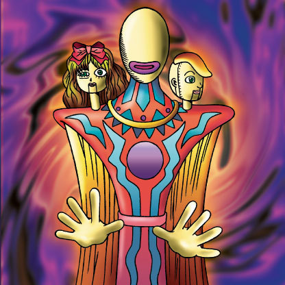

Illusionist Faceless Mage

Description: "When this card is flipped face-up in battle, spellbinds opposing monster for 3 turns."
STATS
ATK: 1200
DEF: 2200DECK COST
Deck Cost per Card: 39EFFECT NOT IMPLEMENTED
Fusion List (1 Possible Fusions)
- Illusionist Faceless Mage + Dancing Elf = Dark Elf